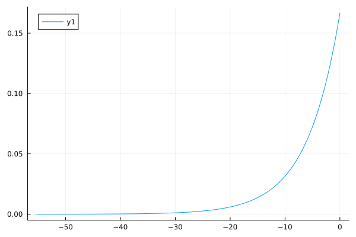

Distribution methods documented here
Some distributions are implemented either for the likelihood function or priors.
Please note that all the recommended methods for new samplers and distributions have been implemented, so we can use pdf, cdf, minimum, maximum, insupport, as well as rand with the distributions herein described. For detais see the public API on the sidebar.
Three-Parameter Beta distribution
The Three-Parameter Beta distribution is defined as follows:
\[\begin{equation} \begin{aligned} f(\tau; \theta_1,\theta_2,\lambda) = \frac{(\theta_2 - \tau)^{-\lambda}}{(\theta_2 - \theta_1)^{1-\lambda} B(1,1-\lambda)} \mathrm{\ if\ }\lambda \leq 0 \\ \mathrm{\ where\ } B(1,1-\lambda) = \int_{0}^{1} t^{1+\lambda-1} (1-t)^{1-1} \mathrm{d}t = \frac{1}{1-\lambda} \end{aligned} \end{equation}\]
and
\[\begin{equation} \begin{aligned} f(\tau; \theta_1,\theta_2,\lambda) = \frac{(\tau-\theta_1)^{\lambda}}{(\theta_2 - \theta_1)^{1+\lambda} B(1+\lambda,1)} \mathrm{\ if\ }\lambda > 0 \\ \mathrm{\ where\ } B(1+\lambda,1) = \int_{0}^{1} t^{1-1} (1-t)^{1-\lambda-1} \mathrm{d}t = \frac{1}{1+\lambda} \end{aligned} \end{equation}\]
The parameters $\theta_1$ and $\theta_2$ are the endpoints of the tratigraphic interval, and $\lambda$ is the paremeter governing the probability of preservation through time.
Assuming that time occurrences are independent and identically distributed, we can also calculate the likelihood of observing a vector representing the collection of $N$ time occurrences given a stratigraphic interval by the product of likelihoods of individual time occurrences:
\[\begin{equation} \begin{aligned} f(\boldsymbol{\tau}; \theta_1,\theta_2,\lambda) = \prod_{i = 1}^{N} f(\tau_i | \theta_1,\theta_2,\lambda) \end{aligned} \end{equation}\]
This is the core element of the model for inference of stratigraphic interval as it is used as likelihood function, which describes the probability of observing the data.
Reflected-Offset Exponential distribution
Sometimes we want priors which are asymmetric and one-tailed. One interesting option is the Exponential distribution, but unfortunately it is bounded to $[0,\infty)$, and always has a tail to the right. Sometimes we may want an Exponential which is displaced to some arbitrary point in the Real line, and we may also want it to have the tail to the left instead.
In order to satisfy these needs, the package provides the RefOffExponential distribution. It has an additional set of parameters, called offset $o$ and reflection $\rho$ parameters. The offset is where the distribution will have its new zero, and the reflection quantity is either -1 or 1, the former for a reflection with respect to $x = 0$ and the latter the unreflected form.
The parameter $\theta$ is the usual scale parameter. Note that this last parameter is counted forward from the offset. For instance, if the offset is 50 and we want a distribution starting in 50 but with mean 100, $\theta$ will need to be 50. Note that if offset and reflection are being used, then the mean will be counting backwards from the offset.
The PDF of the ReffOffExponential is the following:
\[\begin{equation} \begin{aligned} f(x; \theta) = \rho \left(\frac{1}{\theta} e^{-\frac{x-o}{\theta}}\right), \quad x > 0 \end{aligned} \end{equation}\]
This is an example of the RefOffExponential without offset and reflection, and mean = 4:
julia> using Distributionsjulia> using StratIntervalsjulia> using StatsPlotsjulia> plot(RefOffExponential(4, 0.0, 1))Plot{Plots.GRBackend() n=1}julia> savefig("refoffexp4_0_1.svg");julia> nothing

Now with offset = 10, and mean in 14, without reflection:
julia> using Distributionsjulia> using StratIntervalsjulia> using StatsPlotsjulia> plot(RefOffExponential(4, 10.0, 1))Plot{Plots.GRBackend() n=1}julia> savefig("refoffexp4_10_1.svg");julia> nothing
Now without offset, and mean in -6, with reflection:
julia> using Distributionsjulia> using StratIntervalsjulia> using StatsPlotsjulia> plot(RefOffExponential(6, 0.0, -1))Plot{Plots.GRBackend() n=1}julia> savefig("refoffexp6_0_minus1.svg");julia> nothing

And finally, with both offset = 20, mean = 15 and reflection:
julia> using Distributionsjulia> using StratIntervalsjulia> using StatsPlotsjulia> plot(RefOffExponential(5, 20, -1))Plot{Plots.GRBackend() n=1}julia> savefig("refoffexp5_20_minus1.svg");julia> nothing